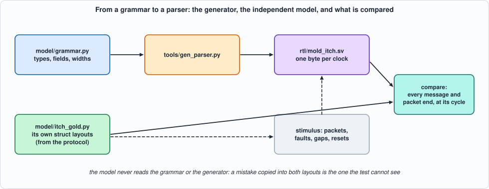
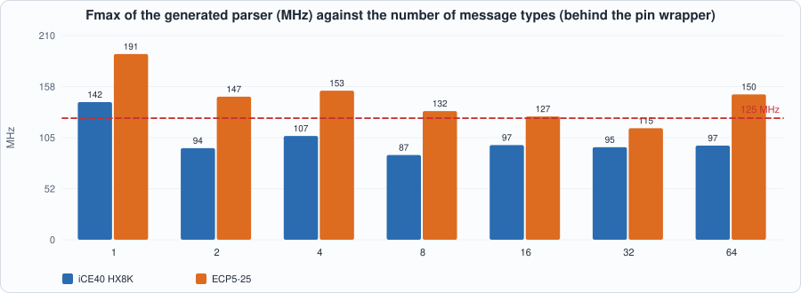
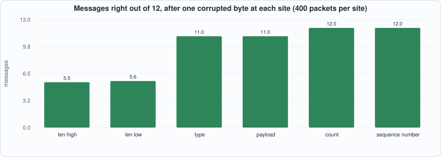

16. Exchange Protocols: MoldUDP64 and ITCH, and a Generator That Turns a Message Grammar into a Parser¶
About the kestrels in this picture
- Lesser kestrel (Falco naumanni) breeds in colonies in Mediterranean Europe and Central Asia and migrates to Africa for the winter. It feeds largely on large insects and nests in cavities in old buildings and cliffs.
- Common kestrel (Falco tinnunculus) ranges across Europe, Asia and Africa. It is famous for hovering: it faces the wind and holds its head almost still while its body adjusts, searching the ground below before it drops onto prey. A much-cited study reported that voles' scent trails reflect ultraviolet light, which kestrels may be able to see.
The scene is imaginary and the birds are stylised drawings.
What you will see: Part 4 begins with the market-data side. An exchange feed is MoldUDP64 packets (a 20-byte header, then blocks of a 2-byte length and a message) carrying ITCH messages (a type byte and fixed-size big-endian fields). The chapter writes the parser once, as a generator: a Python grammar (message types, field names and widths) goes in, a SystemVerilog parser that consumes one byte per clock comes out. The generated parser is checked against a model written separately from the protocol, in two simulators, at the cycle each message appears, on streams full of faults (unknown types, wrong lengths, zero-length blocks, truncated packets, wrong counts, abandoned packets, resets, stray bytes). The first runs found two bugs in the first generated parser, and the mutation run found holes in the tests (no zero-length or one-byte blocks, no block over 255 bytes, no reset in the middle of a packet). Two examples measure what a message type costs and what one corrupted byte does.
What you need to know first: Chapter 9 (a byte-serial parser, the UDP checksum) and Chapter 6 (golden models and mutation testing).
What this chapter builds: model/grammar.py (the grammar), tools/gen_parser.py (the generator), rtl/mold_itch.sv (its output, checked in), model/itch_gold.py (the independent specification and the stimulus), tb/mold_tb.sv, tools/ch16_run.py, tools/ch16_example_a.py, tools/ch16_example_b.py, tools/mut_ch16.py, tools/make_figs_ch16.py.
Scope: what this chapter leaves out, on purpose
One byte per clock, one message at a time (Chapter 17 parses several messages per beat). Fixed-layout messages only: no variable-length fields, no optional fields, no repeating groups. No sequencing: the parser reports the packet's sequence number and the index of each message in it; detecting gaps and asking for retransmission is a separate block. SoupBinTCP and OUCH (the order-entry protocols named in the book's plan) are not built here: the generator's structure (a header, then length-prefixed messages) fits SoupBinTCP's framing and an OUCH encoder is the grammar read backwards (Exercises 3 and 4). The ITCH layouts are from memory: they are NASDAQ TotalView-ITCH 5.0 as the author remembers it, not checked against the specification, which this sandbox cannot fetch; the machinery does not depend on them, the numbers in the layouts do. The model has its own copy of the layouts, so a typo in one copy is caught; the same misreading in both is not.
The protocol, as the parser sees it¶
A UDP payload is a MoldUDP64 packet: session (10 bytes), sequence number of the first message (8), count of blocks (2), then count blocks, each a 2-byte length L and L bytes of message. Count 0 is a heartbeat; count 0xFFFF marks the end of the session. An ITCH message is a type byte and fixed fields (the first fields of most messages are locate 2, tracking 2, timestamp 6):
| type | message | length (bytes, type included) |
|---|---|---|
S |
system event | 12 |
A |
add order | 36 |
F |
add order with participant id | 40 |
E |
order executed | 31 |
X |
order cancel | 23 |
D |
order delete | 19 |
U |
order replace | 35 |
P |
trade | 44 |
The parser's contract, written in the generator's header and in model/itch_gold.py: bytes arrive as valid, sop, eop, data (sop marks the first header byte, eop the last byte of the packet); a message comes out registered the cycle after its last byte with its type, an error code (0 ok, 1 unknown type, 2 length differs from the type's, or is zero), its index in the packet, the packet's sequence number and the fields; the packet end comes out the cycle after the eop byte, with trunc (the packet ended inside the header or inside a block) and cntbad (the number of blocks differs from the count, except 0xFFFF). A new sop abandons a packet in progress silently. Bytes outside a packet are ignored. A block cut off by the end of the packet produces no message. Fields are valid only for error 0 and only the fields the type has.
The grammar and the generator¶
"""Chapter 16: the message grammar the parser generator reads. A message is a type byte followed by fixed-size big-endian fields, in order; `length` is the total length of the message in bytes, type byte included (the length a MoldUDP64 block carries). Field names are shared across messages: a name has one width everywhere. The layouts are those of NASDAQ TotalView-ITCH 5.0 as the author remembers them (Add Order, Add Order with MPID, Order Executed, Order Cancel, Order Delete, Order Replace, Trade, System Event); they were NOT checked against the specification document, which this sandbox cannot fetch, so treat them as a realistic grammar, not as the exchange's.
MoldUDP64 (header: session 10 bytes, sequence number 8, message count 2; then `count` blocks of a 2-byte length and a message) is wired into the generator, not described here."""
ITCH = {
"S": [("locate", 2), ("tracking", 2), ("ts", 6), ("event", 1)],
"A": [("locate", 2), ("tracking", 2), ("ts", 6), ("ref", 8), ("side", 1), ("shares", 4), ("stock", 8), ("price", 4)],
"F": [("locate", 2), ("tracking", 2), ("ts", 6), ("ref", 8), ("side", 1), ("shares", 4), ("stock", 8), ("price", 4), ("mpid", 4)],
"E": [("locate", 2), ("tracking", 2), ("ts", 6), ("ref", 8), ("shares", 4), ("match", 8)],
"X": [("locate", 2), ("tracking", 2), ("ts", 6), ("ref", 8), ("shares", 4)],
"D": [("locate", 2), ("tracking", 2), ("ts", 6), ("ref", 8)],
"U": [("locate", 2), ("tracking", 2), ("ts", 6), ("ref", 8), ("newref", 8), ("shares", 4), ("price", 4)],
"P": [("locate", 2), ("tracking", 2), ("ts", 6), ("ref", 8), ("side", 1), ("shares", 4), ("stock", 8), ("price", 4), ("match", 8)],
}
def length(msg): return 1 + sum(n for _, n in msg)
def fields(g):
"""-> ordered {name: bytes} over the whole grammar; a name with two widths is an error."""
out = {}
for t, m in g.items():
for nm, n in m:
if out.setdefault(nm, n) != n: raise ValueError(f"field {nm} has two widths")
return out

Figure 16.1: the generator, the independent model, and what is compared.The generator is about eighty lines of Python that print SystemVerilog. What it emits: a small state machine (IDLE, HDR, LENH, LENL, BODY), a table of expected lengths by type byte, and one shift register per field name, selected by (type, offset) terms OR-ed together (a name used by several types, such as ref or shares, gets one term per type). A multi-byte field is shifted in, big-endian, one byte per clock. Because the type byte is known only at body offset 0, field selects use the registered type, and fields start at offset 1 or later; the message is reported on the last body byte, and the next block's length bytes take two cycles, so the field registers are stable while the message is read.
#!/usr/bin/env python3
"""Chapter 16: the parser generator. grammar (model/grammar.py) -> a SystemVerilog module `<name>` that parses MoldUDP64 packets carrying messages of that grammar, one byte per clock.
Usage: python3 tools/gen_parser.py [name] [out.sv] [grammar variable in model/grammar.py] (defaults: mold_itch rtl/mold_itch.sv ITCH)
The generated module (interface and behaviour are specified by model/itch_gold.py, from the protocol, not from this file):
in : clk rst valid sop eop data[7:0] one byte per cycle; sop marks the first byte of a packet (the first byte of the MoldUDP64 header), eop the last
out: m_valid m_type m_err[1:0] m_idx[15:0] h_seq[63:0] f_<field>... one message, registered, the cycle after its last byte; err 0 ok, 1 unknown type, 2 length differs from the type's (or is 0); the f_ registers are valid only for err = 0 and the fields the type has
p_valid p_trunc p_cntbad h_session[79:0] h_count[15:0] the packet ended (eop), the cycle after the eop byte; trunc: it ended inside the header or inside a block; cntbad: the number of blocks differs from the count (count 0xFFFF, end of session, is not checked)
A new sop abandons a packet in progress, silently. Bytes outside a packet (no sop since the last eop) are ignored."""
import os, sys
sys.path.insert(0, os.path.join(os.path.dirname(os.path.abspath(__file__)), "..", "model"))
import grammar
def gen(g, name="mold_itch"):
F = grammar.fields(g); types = list(g)
L = []; A = L.append
A(f"// GENERATED by tools/gen_parser.py from model/grammar.py -- do not edit. Grammar: {len(types)} message types ({', '.join(types)}), {len(F)} distinct fields.")
A("// verilator lint_off DECLFILENAME"); A("// verilator lint_off UNUSEDSIGNAL")
ports = ["input logic clk, input logic rst, input logic valid, input logic sop, input logic eop, input logic [7:0] data,",
"output logic m_valid, output logic [7:0] m_type, output logic [1:0] m_err, output logic [15:0] m_idx, output logic [63:0] h_seq,"]
ports.append("output logic p_valid, output logic p_trunc, output logic p_cntbad, output logic [79:0] h_session, output logic [15:0] h_count,")
fp = [f"output logic [{8 * n - 1}:0] f_{nm}" for nm, n in F.items()]
A(f"module {name} (\n " + "\n ".join(ports) + "\n " + ",\n ".join(fp) + ");")
A(" localparam logic [2:0] IDLE = 3'd0, HDR = 3'd1, LENH = 3'd2, LENL = 3'd3, BODY = 3'd4;")
A(" logic [2:0] st; logic [4:0] pos; logic [7:0] lenh, off, ty; logic [15:0] rem, nblk; logic [1:0] er, er_d;")
A(" logic [7:0] exp_len; logic [15:0] len_now; logic last_byte, hdr_last; logic [2:0] st_n; logic [15:0] nblk_n, count_now;")
A(" always_comb begin")
A(" case (data)")
for t, m in g.items(): A(f" 8'h{ord(t):02x}: exp_len = 8'd{grammar.length(m)}; // {t}")
A(" default: exp_len = 8'd0;"); A(" endcase")
A(" count_now = (st == HDR) ? {h_count[7:0], data} : h_count;")
A(" len_now = {lenh, data}; hdr_last = (pos == 5'd19); last_byte = (rem == 16'd1);")
A(" er_d = (exp_len == 8'd0) ? 2'd1 : (({8'd0, exp_len} == rem) ? 2'd0 : 2'd2); // at the first body byte rem is the block's length")
A(" st_n = st; nblk_n = nblk;")
A(" case (st)")
A(" HDR: if (hdr_last) st_n = LENH;")
A(" LENH: st_n = LENL;")
A(" LENL: if (len_now == 16'd0) begin st_n = LENH; nblk_n = nblk + 16'd1; end else st_n = BODY;")
A(" BODY: if (last_byte) begin st_n = LENH; nblk_n = nblk + 16'd1; end")
A(" default: ;"); A(" endcase")
A(" end")
# field select terms
sel = {nm: [] for nm in F}
for t, m in g.items():
o = 1
for nm, n in m: sel[nm].append((t, o, n)); o += n
A(" logic " + ", ".join(f"s_{nm}" for nm in F) + ";")
A(" always_comb begin")
for nm in F:
terms = " || ".join(f"(ty == 8'h{ord(t):02x} && off >= 8'd{o} && off < 8'd{o + n})" for t, o, n in sel[nm])
A(f" s_{nm} = (st == BODY) && (er == 2'd0) && ({terms});")
A(" end")
A(" always_ff @(posedge clk) begin")
A(" m_valid <= 1'b0; p_valid <= 1'b0;")
A(" if (rst) st <= IDLE;")
A(" else if (valid) begin")
A(" if (sop) begin st <= HDR; pos <= 5'd1; nblk <= 16'd0; h_session <= {72'd0, data}; end")
A(" else begin")
A(" st <= st_n; nblk <= nblk_n;")
A(" case (st)")
A(" HDR: begin pos <= pos + 5'd1;")
A(" if (pos < 5'd10) h_session <= {h_session[71:0], data}; else if (pos < 5'd18) h_seq <= {h_seq[55:0], data}; else h_count <= {h_count[7:0], data}; end")
A(" LENH: lenh <= data;")
A(" LENL: begin rem <= len_now; off <= 8'd0;")
A(" if (len_now == 16'd0) begin m_valid <= 1'b1; m_type <= 8'd0; m_err <= 2'd2; m_idx <= nblk; end end")
A(" BODY: begin")
A(" rem <= rem - 16'd1; if (off != 8'hff) off <= off + 8'd1;")
A(" if (off == 8'd0) begin ty <= data; er <= er_d; end")
A(" if (last_byte) begin m_valid <= 1'b1; m_type <= (off == 8'd0) ? data : ty; m_err <= (off == 8'd0) ? er_d : er; m_idx <= nblk; end")
A(" end")
A(" default: ;"); A(" endcase")
A(" end")
A(" if (eop && !sop && st != IDLE) begin p_valid <= 1'b1; p_trunc <= (st_n != LENH); p_cntbad <= (st_n == LENH) && (nblk_n != count_now) && (count_now != 16'hffff); st <= IDLE; end")
A(" if (eop && sop) begin p_valid <= 1'b1; p_trunc <= 1'b1; p_cntbad <= 1'b0; st <= IDLE; end")
A(" end")
A(" end")
A(" always_ff @(posedge clk) if (valid && !sop && !rst) begin")
for nm, n in F.items(): A(f" if (s_{nm}) f_{nm} <= {{f_{nm}[{8 * n - 9}:0], data}};" if n > 1 else f" if (s_{nm}) f_{nm} <= data;")
A(" end")
A("endmodule")
# a wrapper with a handful of pins, ONLY so that the design fits a chip for the place-and-route runs: the inputs are shifted in serially, all outputs are folded into one registered 16-bit word
ow = 1 + 8 + 2 + 16 + 64 + 1 + 1 + 1 + 80 + 16 + sum(8 * n for n in F.values())
A(f"module {name}_syn (input logic clk, input logic rst, input logic si, input logic sh, output logic [15:0] info);")
A(" logic [10:0] iv; logic m_valid, p_valid, p_trunc, p_cntbad; logic [7:0] m_type; logic [1:0] m_err; logic [15:0] m_idx, h_count; logic [63:0] h_seq; logic [79:0] h_session;")
for nm, n in F.items(): A(f" logic [{8 * n - 1}:0] f_{nm};")
A(" always_ff @(posedge clk) if (sh) iv <= {iv[9:0], si};")
A(f" {name} u (.clk(clk), .rst(rst), .valid(iv[10]), .sop(iv[9]), .eop(iv[8]), .data(iv[7:0]), .m_valid(m_valid), .m_type(m_type), .m_err(m_err), .m_idx(m_idx), .h_seq(h_seq), .p_valid(p_valid), .p_trunc(p_trunc), .p_cntbad(p_cntbad), .h_session(h_session), .h_count(h_count)" + "".join(f", .f_{nm}(f_{nm})" for nm in F) + ");")
A(f" logic [{ow - 1}:0] all; logic [15:0] x;")
nch = (ow + 15) // 16; ng = (nch + 7) // 8
A(" always_comb all = {m_valid, m_type, m_err, m_idx, h_seq, p_valid, p_trunc, p_cntbad, h_session, h_count" + "".join(f", f_{nm}" for nm in F) + "};")
A(f" logic [15:0] g1 [{ng}]; logic [{nch * 16 - 1}:0] allp; always_comb allp = {nch * 16}'(all);")
A(f" always_ff @(posedge clk) for (int q = 0; q < {ng}; q++) begin g1[q] <= 16'd0; for (int k = 0; k < 8; k++) if (q * 8 + k < {nch}) g1[q] <= g1[q] ^ 16'(allp >> ((q * 8 + k) * 16)); end")
A(" always_comb begin x = 16'd0; for (int q = 0; q < " + str(ng) + "; q++) x ^= g1[q]; end")
A(" always_ff @(posedge clk) info <= x;")
A("endmodule")
return "\n".join(L) + "\n"
def gen_tb_includes(g, outdir):
"""The three include files of tb/mold_tb.sv for a grammar: declarations, port connections and the print statement of a message."""
F = grammar.fields(g)
open(os.path.join(outdir, "mold_decl.vh"), "w").write("".join(f" logic [{8 * n - 1}:0] f_{nm};\n" for nm, n in F.items()))
open(os.path.join(outdir, "mold_conn.vh"), "w").write("".join(f" , .f_{nm}(f_{nm})\n" for nm in F))
open(os.path.join(outdir, "mold_print.vh"), "w").write(' $display("M %0d %0d %0d %0d %0d' + " %h" * len(F) + '", cyc, m_type, m_err, m_idx, h_seq' + "".join(f", f_{nm}" for nm in F) + ");\n")
return list(F)
if __name__ == "__main__":
name = sys.argv[1] if len(sys.argv) > 1 else "mold_itch"; out = sys.argv[2] if len(sys.argv) > 2 else "rtl/mold_itch.sv"; gname = sys.argv[3] if len(sys.argv) > 3 else "ITCH"
open(out, "w").write(gen(getattr(grammar, gname), name)); print("wrote", out, "and", ", ".join(gen_tb_includes(getattr(grammar, gname), os.path.join(os.path.dirname(os.path.abspath(__file__)), "..", "out"))))
The generated parser for ITCH (124 lines, regenerated and compared with the checked-in copy by the test run):
// GENERATED by tools/gen_parser.py from model/grammar.py -- do not edit. Grammar: 8 message types (S, A, F, E, X, D, U, P), 12 distinct fields.
// verilator lint_off DECLFILENAME
// verilator lint_off UNUSEDSIGNAL
module mold_itch (
input logic clk, input logic rst, input logic valid, input logic sop, input logic eop, input logic [7:0] data,
output logic m_valid, output logic [7:0] m_type, output logic [1:0] m_err, output logic [15:0] m_idx, output logic [63:0] h_seq,
output logic p_valid, output logic p_trunc, output logic p_cntbad, output logic [79:0] h_session, output logic [15:0] h_count,
output logic [15:0] f_locate,
output logic [15:0] f_tracking,
output logic [47:0] f_ts,
output logic [7:0] f_event,
output logic [63:0] f_ref,
output logic [7:0] f_side,
output logic [31:0] f_shares,
output logic [63:0] f_stock,
output logic [31:0] f_price,
output logic [31:0] f_mpid,
output logic [63:0] f_match,
output logic [63:0] f_newref);
localparam logic [2:0] IDLE = 3'd0, HDR = 3'd1, LENH = 3'd2, LENL = 3'd3, BODY = 3'd4;
logic [2:0] st; logic [4:0] pos; logic [7:0] lenh, off, ty; logic [15:0] rem, nblk; logic [1:0] er, er_d;
logic [7:0] exp_len; logic [15:0] len_now; logic last_byte, hdr_last; logic [2:0] st_n; logic [15:0] nblk_n, count_now;
always_comb begin
case (data)
8'h53: exp_len = 8'd12; // S
8'h41: exp_len = 8'd36; // A
8'h46: exp_len = 8'd40; // F
8'h45: exp_len = 8'd31; // E
8'h58: exp_len = 8'd23; // X
8'h44: exp_len = 8'd19; // D
8'h55: exp_len = 8'd35; // U
8'h50: exp_len = 8'd44; // P
default: exp_len = 8'd0;
endcase
count_now = (st == HDR) ? {h_count[7:0], data} : h_count;
len_now = {lenh, data}; hdr_last = (pos == 5'd19); last_byte = (rem == 16'd1);
er_d = (exp_len == 8'd0) ? 2'd1 : (({8'd0, exp_len} == rem) ? 2'd0 : 2'd2); // at the first body byte rem is the block's length
st_n = st; nblk_n = nblk;
case (st)
HDR: if (hdr_last) st_n = LENH;
LENH: st_n = LENL;
LENL: if (len_now == 16'd0) begin st_n = LENH; nblk_n = nblk + 16'd1; end else st_n = BODY;
BODY: if (last_byte) begin st_n = LENH; nblk_n = nblk + 16'd1; end
default: ;
endcase
end
logic s_locate, s_tracking, s_ts, s_event, s_ref, s_side, s_shares, s_stock, s_price, s_mpid, s_match, s_newref;
always_comb begin
s_locate = (st == BODY) && (er == 2'd0) && ((ty == 8'h53 && off >= 8'd1 && off < 8'd3) || (ty == 8'h41 && off >= 8'd1 && off < 8'd3) || (ty == 8'h46 && off >= 8'd1 && off < 8'd3) || (ty == 8'h45 && off >= 8'd1 && off < 8'd3) || (ty == 8'h58 && off >= 8'd1 && off < 8'd3) || (ty == 8'h44 && off >= 8'd1 && off < 8'd3) || (ty == 8'h55 && off >= 8'd1 && off < 8'd3) || (ty == 8'h50 && off >= 8'd1 && off < 8'd3));
s_tracking = (st == BODY) && (er == 2'd0) && ((ty == 8'h53 && off >= 8'd3 && off < 8'd5) || (ty == 8'h41 && off >= 8'd3 && off < 8'd5) || (ty == 8'h46 && off >= 8'd3 && off < 8'd5) || (ty == 8'h45 && off >= 8'd3 && off < 8'd5) || (ty == 8'h58 && off >= 8'd3 && off < 8'd5) || (ty == 8'h44 && off >= 8'd3 && off < 8'd5) || (ty == 8'h55 && off >= 8'd3 && off < 8'd5) || (ty == 8'h50 && off >= 8'd3 && off < 8'd5));
s_ts = (st == BODY) && (er == 2'd0) && ((ty == 8'h53 && off >= 8'd5 && off < 8'd11) || (ty == 8'h41 && off >= 8'd5 && off < 8'd11) || (ty == 8'h46 && off >= 8'd5 && off < 8'd11) || (ty == 8'h45 && off >= 8'd5 && off < 8'd11) || (ty == 8'h58 && off >= 8'd5 && off < 8'd11) || (ty == 8'h44 && off >= 8'd5 && off < 8'd11) || (ty == 8'h55 && off >= 8'd5 && off < 8'd11) || (ty == 8'h50 && off >= 8'd5 && off < 8'd11));
s_event = (st == BODY) && (er == 2'd0) && ((ty == 8'h53 && off >= 8'd11 && off < 8'd12));
s_ref = (st == BODY) && (er == 2'd0) && ((ty == 8'h41 && off >= 8'd11 && off < 8'd19) || (ty == 8'h46 && off >= 8'd11 && off < 8'd19) || (ty == 8'h45 && off >= 8'd11 && off < 8'd19) || (ty == 8'h58 && off >= 8'd11 && off < 8'd19) || (ty == 8'h44 && off >= 8'd11 && off < 8'd19) || (ty == 8'h55 && off >= 8'd11 && off < 8'd19) || (ty == 8'h50 && off >= 8'd11 && off < 8'd19));
s_side = (st == BODY) && (er == 2'd0) && ((ty == 8'h41 && off >= 8'd19 && off < 8'd20) || (ty == 8'h46 && off >= 8'd19 && off < 8'd20) || (ty == 8'h50 && off >= 8'd19 && off < 8'd20));
s_shares = (st == BODY) && (er == 2'd0) && ((ty == 8'h41 && off >= 8'd20 && off < 8'd24) || (ty == 8'h46 && off >= 8'd20 && off < 8'd24) || (ty == 8'h45 && off >= 8'd19 && off < 8'd23) || (ty == 8'h58 && off >= 8'd19 && off < 8'd23) || (ty == 8'h55 && off >= 8'd27 && off < 8'd31) || (ty == 8'h50 && off >= 8'd20 && off < 8'd24));
s_stock = (st == BODY) && (er == 2'd0) && ((ty == 8'h41 && off >= 8'd24 && off < 8'd32) || (ty == 8'h46 && off >= 8'd24 && off < 8'd32) || (ty == 8'h50 && off >= 8'd24 && off < 8'd32));
s_price = (st == BODY) && (er == 2'd0) && ((ty == 8'h41 && off >= 8'd32 && off < 8'd36) || (ty == 8'h46 && off >= 8'd32 && off < 8'd36) || (ty == 8'h55 && off >= 8'd31 && off < 8'd35) || (ty == 8'h50 && off >= 8'd32 && off < 8'd36));
s_mpid = (st == BODY) && (er == 2'd0) && ((ty == 8'h46 && off >= 8'd36 && off < 8'd40));
s_match = (st == BODY) && (er == 2'd0) && ((ty == 8'h45 && off >= 8'd23 && off < 8'd31) || (ty == 8'h50 && off >= 8'd36 && off < 8'd44));
s_newref = (st == BODY) && (er == 2'd0) && ((ty == 8'h55 && off >= 8'd19 && off < 8'd27));
end
always_ff @(posedge clk) begin
m_valid <= 1'b0; p_valid <= 1'b0;
if (rst) st <= IDLE;
else if (valid) begin
if (sop) begin st <= HDR; pos <= 5'd1; nblk <= 16'd0; h_session <= {72'd0, data}; end
else begin
st <= st_n; nblk <= nblk_n;
case (st)
HDR: begin pos <= pos + 5'd1;
if (pos < 5'd10) h_session <= {h_session[71:0], data}; else if (pos < 5'd18) h_seq <= {h_seq[55:0], data}; else h_count <= {h_count[7:0], data}; end
LENH: lenh <= data;
LENL: begin rem <= len_now; off <= 8'd0;
if (len_now == 16'd0) begin m_valid <= 1'b1; m_type <= 8'd0; m_err <= 2'd2; m_idx <= nblk; end end
BODY: begin
rem <= rem - 16'd1; if (off != 8'hff) off <= off + 8'd1;
if (off == 8'd0) begin ty <= data; er <= er_d; end
if (last_byte) begin m_valid <= 1'b1; m_type <= (off == 8'd0) ? data : ty; m_err <= (off == 8'd0) ? er_d : er; m_idx <= nblk; end
end
default: ;
endcase
end
if (eop && !sop && st != IDLE) begin p_valid <= 1'b1; p_trunc <= (st_n != LENH); p_cntbad <= (st_n == LENH) && (nblk_n != count_now) && (count_now != 16'hffff); st <= IDLE; end
if (eop && sop) begin p_valid <= 1'b1; p_trunc <= 1'b1; p_cntbad <= 1'b0; st <= IDLE; end
end
end
always_ff @(posedge clk) if (valid && !sop && !rst) begin
if (s_locate) f_locate <= {f_locate[7:0], data};
if (s_tracking) f_tracking <= {f_tracking[7:0], data};
if (s_ts) f_ts <= {f_ts[39:0], data};
if (s_event) f_event <= data;
if (s_ref) f_ref <= {f_ref[55:0], data};
if (s_side) f_side <= data;
if (s_shares) f_shares <= {f_shares[23:0], data};
if (s_stock) f_stock <= {f_stock[55:0], data};
if (s_price) f_price <= {f_price[23:0], data};
if (s_mpid) f_mpid <= {f_mpid[23:0], data};
if (s_match) f_match <= {f_match[55:0], data};
if (s_newref) f_newref <= {f_newref[55:0], data};
end
endmodule
module mold_itch_syn (input logic clk, input logic rst, input logic si, input logic sh, output logic [15:0] info);
logic [10:0] iv; logic m_valid, p_valid, p_trunc, p_cntbad; logic [7:0] m_type; logic [1:0] m_err; logic [15:0] m_idx, h_count; logic [63:0] h_seq; logic [79:0] h_session;
logic [15:0] f_locate;
logic [15:0] f_tracking;
logic [47:0] f_ts;
logic [7:0] f_event;
logic [63:0] f_ref;
logic [7:0] f_side;
logic [31:0] f_shares;
logic [63:0] f_stock;
logic [31:0] f_price;
logic [31:0] f_mpid;
logic [63:0] f_match;
logic [63:0] f_newref;
always_ff @(posedge clk) if (sh) iv <= {iv[9:0], si};
mold_itch u (.clk(clk), .rst(rst), .valid(iv[10]), .sop(iv[9]), .eop(iv[8]), .data(iv[7:0]), .m_valid(m_valid), .m_type(m_type), .m_err(m_err), .m_idx(m_idx), .h_seq(h_seq), .p_valid(p_valid), .p_trunc(p_trunc), .p_cntbad(p_cntbad), .h_session(h_session), .h_count(h_count), .f_locate(f_locate), .f_tracking(f_tracking), .f_ts(f_ts), .f_event(f_event), .f_ref(f_ref), .f_side(f_side), .f_shares(f_shares), .f_stock(f_stock), .f_price(f_price), .f_mpid(f_mpid), .f_match(f_match), .f_newref(f_newref));
logic [637:0] all; logic [15:0] x;
always_comb all = {m_valid, m_type, m_err, m_idx, h_seq, p_valid, p_trunc, p_cntbad, h_session, h_count, f_locate, f_tracking, f_ts, f_event, f_ref, f_side, f_shares, f_stock, f_price, f_mpid, f_match, f_newref};
logic [15:0] g1 [5]; logic [639:0] allp; always_comb allp = 640'(all);
always_ff @(posedge clk) for (int q = 0; q < 5; q++) begin g1[q] <= 16'd0; for (int k = 0; k < 8; k++) if (q * 8 + k < 40) g1[q] <= g1[q] ^ 16'(allp >> ((q * 8 + k) * 16)); end
always_comb begin x = 16'd0; for (int q = 0; q < 5; q++) x ^= g1[q]; end
always_ff @(posedge clk) info <= x;
endmodule
The model¶
model/itch_gold.py is the specification: decode(packets) returns the messages and packet ends that must appear, with their cycles, from the bytes and the cycle of each byte. It is written from the protocol with struct format strings of its own, not from the grammar or the generator, and the stimulus generators (random_packets, schedule) live beside it.
#!/usr/bin/env python3
"""Chapter 16: the specification of the MoldUDP64 + ITCH parser, written from the protocol and NOT from the grammar file or the generator: the message layouts are `struct` format strings of their own (the same numbers, written again; if the two copies disagree a test fails, if the author misread the protocol in both, nothing does).
decode(packets) -> the events the parser must produce, with the cycle in which each appears. A packet is a list of (cycle, byte) and a flag `eop` (False: the packet is abandoned by the next sop). Events:
("M", cycle, type, err, idx, seq, {field: value}) a message, the cycle after its last byte (a zero-length block: the cycle after the second length byte)
("P", cycle, trunc, cntbad, session, count) the packet ended: the cycle after the eop byte
err: 0 ok, 1 unknown type, 2 the block's length is not the type's (or is 0). Fields are present only for err = 0. A block that is cut off by the end of the packet produces no message and makes the packet `trunc`."""
import random, struct
FMT = {"S": ">HH6sc", "A": ">HH6sQcI8sI", "F": ">HH6sQcI8sII", "E": ">HH6sQIQ", "X": ">HH6sQI", "D": ">HH6sQ", "U": ">HH6sQQII", "P": ">HH6sQcI8sIQ"}
NAMES = {"S": ["locate", "tracking", "ts", "event"], "A": ["locate", "tracking", "ts", "ref", "side", "shares", "stock", "price"], "F": ["locate", "tracking", "ts", "ref", "side", "shares", "stock", "price", "mpid"],
"E": ["locate", "tracking", "ts", "ref", "shares", "match"], "X": ["locate", "tracking", "ts", "ref", "shares"], "D": ["locate", "tracking", "ts", "ref"], "U": ["locate", "tracking", "ts", "ref", "newref", "shares", "price"],
"P": ["locate", "tracking", "ts", "ref", "side", "shares", "stock", "price", "match"]}
def _codes(fmt):
out = []; i = 1
while i < len(fmt):
if fmt[i].isdigit(): out.append(fmt[i]); i += 2
else: out.append(fmt[i]); i += 1
return out
WIDTH = {n: {"H": 2, "6": 6, "Q": 8, "c": 1, "I": 4, "8": 8}[ch] for t in FMT for n, ch in zip(NAMES[t], _codes(FMT[t]))} # bytes per field name
def body_fields(t, body):
vals = struct.unpack(FMT[chr(t)], body[1:]); return {n: (int.from_bytes(v, "big") if isinstance(v, bytes) else v) for n, v in zip(NAMES[chr(t)], vals)}
def decode(packets):
ev = []
for pk in packets:
b = [x for _, x in pk["bytes"]]; cy = [c for c, _ in pk["bytes"]]; eop = pk["eop"]; n = len(b); trunc = False; nblk = 0
if n < 20: trunc = True; pos = n
else:
session = int.from_bytes(bytes(b[0:10]), "big"); seq = int.from_bytes(bytes(b[10:18]), "big"); count = int.from_bytes(bytes(b[18:20]), "big"); pos = 20; idx = 0
while pos < n:
if pos + 2 > n: trunc = True; break
L = b[pos] * 256 + b[pos + 1]
if L == 0: ev.append(("M", cy[pos + 1] + 1, 0, 2, idx, seq, {})); idx += 1; nblk += 1; pos += 2; continue
if pos + 2 + L > n: trunc = True; break
body = bytes(b[pos + 2: pos + 2 + L]); t = body[0]; end = cy[pos + 1 + L] + 1
if chr(t) not in FMT: ev.append(("M", end, t, 1, idx, seq, {}))
elif struct.calcsize(FMT[chr(t)]) + 1 != L: ev.append(("M", end, t, 2, idx, seq, {}))
else: ev.append(("M", end, t, 0, idx, seq, body_fields(t, body)))
idx += 1; nblk += 1; pos += 2 + L
if eop:
if n >= 20: ev.append(("P", cy[-1] + 1, int(trunc), int((not trunc) and nblk != count and count != 0xFFFF), session, count))
else: ev.append(("P", cy[-1] + 1, 1, 0, None, None))
return ev
# ------------------------------------------------------------------ building packets
def build_msg(rng, t, **ov):
f = {"locate": rng.getrandbits(16), "tracking": rng.getrandbits(16), "ts": rng.getrandbits(48), "ref": rng.getrandbits(64), "newref": rng.getrandbits(64), "side": rng.choice(b"BS"), "shares": rng.getrandbits(32), "stock": int.from_bytes(rng.choice([b"AAPL ", b"MSFT ", b"ZVZZT ", b"SPY "]), "big"),
"price": rng.getrandbits(32), "match": rng.getrandbits(64), "event": rng.choice(b"OSQMEC"), "mpid": int.from_bytes(rng.choice([b"GSCO", b"MSCO", b"NITE"]), "big")}; f.update(ov); out = bytes([ord(t)]); vals = []
parts = []
for n, ch in zip(NAMES[t], _codes(FMT[t])):
v = f[n]; parts.append(v.to_bytes({"H": 2, "6": 6, "Q": 8, "c": 1, "I": 4, "8": 8}[ch], "big"))
return out + b"".join(parts)
def build_packet(rng, msgs, seq=None, session=b"NASDAQ0001", count=None, **_):
seq = rng.getrandbits(64) if seq is None else seq; c = len(msgs) if count is None else count
return session + seq.to_bytes(8, "big") + c.to_bytes(2, "big") + b"".join(len(m).to_bytes(2, "big") + m for m in msgs)
TYPES = list(FMT)
# ------------------------------------------------------------------ stimulus: one line per cycle
def schedule(rng, pkts, gap=0.1, stray=0.05, between=(0, 3)):
"""pkts: list of dict(data=bytes, eop=bool, reset_at=None or a byte index). -> (lines, packets with the cycle of every byte). A line is (valid, sop, eop, data, rst). Idle cycles (probability `gap` per byte) carry random junk in the unused signals; stray bytes (valid, no sop, sometimes with eop) fall between packets, but not after a packet that was left open (no eop): the parser takes those for its continuation. With reset_at = i the reset is pulled after byte i - 1; the rest of the packet arrives as stray bytes (its eop too) and the packet is the bytes before the reset, without an eop."""
lines = []; out = []; open_ = False
def idle(): lines.append((0, rng.getrandbits(1), rng.getrandbits(1), rng.getrandbits(8), 0))
for pk in pkts:
for _ in range(rng.randint(*between)):
if rng.random() < stray and not open_: lines.append((1, 0, 1 if rng.random() < .3 else 0, rng.getrandbits(8), 0))
else: idle()
by = []; ra = pk.get("reset_at"); n = len(pk["data"])
for i, x in enumerate(pk["data"]):
while rng.random() < gap: idle()
if ra is not None and i == ra: lines.append((0, 0, 0, 0, 1))
if ra is not None and i >= ra: lines.append((1, 0, 1 if (pk["eop"] and i == n - 1) else 0, x, 0)); continue
by.append((len(lines), x)); lines.append((1, 1 if i == 0 else 0, 1 if (pk["eop"] and i == n - 1) else 0, x, 0))
out.append(dict(bytes=by, eop=pk["eop"] and ra is None)); open_ = (not pk["eop"]) and ra is None # a packet without eop stays open until the next sop: stray bytes would be parsed as its continuation
for _ in range(4): idle()
return lines, out
def write_stim(path, lines):
with open(path, "w") as f:
for v, s_, e, d, r in lines: f.write("%03x\n" % ((v << 11) | (s_ << 10) | (e << 9) | (r << 8) | d))
return len(lines)
def random_packets(rng, n, maxmsg=6, p_err=0.15):
"""A mix of well-formed packets and packets with every kind of fault: an unknown type, a wrong length, a zero-length block, a one-byte block, a block longer than 255 bytes, a count that is wrong, a packet cut short (with and without eop), a header-only packet, a one-byte packet, a reset in the middle of a packet."""
pk = []
for _ in range(n):
msgs = [build_msg(rng, rng.choice(TYPES)) for _ in range(rng.randint(0, maxmsg))]; r = rng.random(); eop = True; cnt = None; ra = None
if msgs and r < p_err * .2: i = rng.randrange(len(msgs)); msgs[i] = bytes([rng.choice([ord("Z"), 0, 255, ord("a")])]) + msgs[i][1:]
elif msgs and r < p_err * .35: i = rng.randrange(len(msgs)); msgs[i] = msgs[i] + bytes([rng.getrandbits(8)]) if rng.random() < .5 else msgs[i][:-1]
elif msgs and r < p_err * .5: i = rng.randrange(len(msgs)); msgs[i] = rng.choice([b"", bytes([rng.choice(b"ASDZ")]), bytes(rng.getrandbits(8) for _ in range(rng.randint(250, 520)))])
elif r < p_err * .6: cnt = rng.choice([0, 1, 2, 7, 0xFFFF])
data = build_packet(rng, msgs, count=cnt)
if msgs and p_err * .6 <= r < p_err * .75: data = data[:rng.randrange(1, len(data))]
elif p_err * .75 <= r < p_err * .85: eop = False
elif p_err * .85 <= r < p_err * .95: ra = rng.randrange(1, len(data))
elif p_err * .95 <= r < p_err: data = data[:rng.randrange(1, 22)]
pk.append(dict(data=data, eop=eop, reset_at=ra))
return pk
if __name__ == "__main__":
rng = random.Random(1); ms = [build_msg(rng, t) for t in "SAFEXDUP"]
assert [len(m) for m in ms] == [12, 36, 40, 31, 23, 19, 35, 44]
pk = build_packet(rng, ms, seq=7); bytes_ = [(i, x) for i, x in enumerate(pk)]
ev = decode([dict(bytes=bytes_, eop=True)]); assert len(ev) == 9 and ev[-1][:4] == ("P", len(pk), 0, 0) and [e[3] for e in ev[:-1]] == [0] * 8 and ev[1][6]["stock"] > 0
ev = decode([dict(bytes=bytes_[:-3], eop=True)]); assert ev[-1][2] == 1 and len(ev) == 8 # cut inside the last block: that message is lost, the packet is truncated
pk2 = build_packet(rng, ms[:2], count=3); ev = decode([dict(bytes=[(i, x) for i, x in enumerate(pk2)], eop=True)]); assert ev[-1][3] == 1 # count says 3, two blocks
z = build_packet(rng, [b"", b"A", ms[5]]); ev = decode([dict(bytes=[(i, x) for i, x in enumerate(z)], eop=True)]); assert [e[3] for e in ev[:3]] == [2, 2, 0] and ev[0][2] == 0 and ev[1][2] == ord("A") # a zero-length block, a block of one byte, a good one
print("itch_gold hand-checked scenarios passed")
The tests¶
// Chapter 16 testbench for the generated parser mold_itch (rtl/mold_itch.sv): line k of out/mold_stim.hex is presented in cycle k: valid(bit 11) sop(10) eop(9) rst(8) data(7:0); a line with valid = 0 carries random junk in the other signals. Before every clock edge it prints the outputs that are valid:
// M <cycle> <type> <err> <idx> <seq> <fields as hex, in the order of tools/gen_parser.py's port list> (one per message)
// P <cycle> <trunc> <cntbad> <session> <count> (one per packet end)
// <cycle> is the cycle number of the clock edge at which the line is seen (the line of the last byte is cycle c, its message appears at cycle c + 1). The declarations, port connections and print statement of the fields are the include files out/mold_decl.vh, mold_conn.vh and mold_print.vh, written by tools/gen_parser.py for the grammar.
`timescale 1ns/1ps
`ifndef NC
`define NC 1000
`endif
module mold_tb;
localparam int NC = `NC;
logic clk = 0, rst = 1, valid = 0, sop = 0, eop = 0; logic [7:0] data = '0; logic [11:0] vec [0:NC-1]; int k, cyc = 0; logic run = 0;
logic m_valid, p_valid, p_trunc, p_cntbad; logic [7:0] m_type; logic [1:0] m_err; logic [15:0] m_idx, h_count; logic [63:0] h_seq; logic [79:0] h_session;
`include "out/mold_decl.vh"
mold_itch dut (.clk(clk), .rst(rst), .valid(valid), .sop(sop), .eop(eop), .data(data), .m_valid(m_valid), .m_type(m_type), .m_err(m_err), .m_idx(m_idx), .h_seq(h_seq), .p_valid(p_valid), .p_trunc(p_trunc), .p_cntbad(p_cntbad), .h_session(h_session), .h_count(h_count)
`include "out/mold_conn.vh"
);
always #4 clk = ~clk;
always @(posedge clk) if (run) begin
if (m_valid) begin
`include "out/mold_print.vh"
end
if (p_valid) $display("P %0d %0d %0d %h %0d", cyc, p_trunc, p_cntbad, h_session, h_count);
cyc++;
end
initial begin
$readmemh("out/mold_stim.hex", vec);
repeat (3) @(negedge clk); rst = 0;
for (k = 0; k < NC; k++) begin
{valid, sop, eop} = vec[k][11:9]; rst = vec[k][8]; data = vec[k][7:0]; run = 1; @(negedge clk);
end
valid = 0; sop = 0; eop = 0; repeat (6) @(negedge clk); $finish;
end
endmodule
#!/usr/bin/env python3
"""Chapter 16: the running designs. (1) the generator is deterministic and its output lints; (2) the model: hand-checked scenarios and the properties of the stimulus; (3) the generated parser against the model, every message and packet end with its cycle, in two simulators; (4) the generator on a second grammar (two message types, different widths): the same tests, the same model machinery."""
import os, random, re, subprocess, sys
sys.path.insert(0, os.path.dirname(os.path.abspath(__file__))); sys.path.insert(0, os.path.join(os.path.dirname(os.path.abspath(__file__)), "..", "model"))
import flow, grammar, gen_parser as GP, itch_gold as G
R = flow.ROOT; F = ["rtl/mold_itch.sv", "tb/mold_tb.sv"]
FIELDS = list(grammar.fields(grammar.ITCH)) # the order of the tb's print list
def sim(lines, simu="icarus"):
n = G.write_stim(os.path.join(R, "out", "mold_stim.hex"), lines)
o = (flow.sim_icarus if simu == "icarus" else flow.sim_verilator)(F, "mold_tb", defines=(f"NC={n}",))[1]
return o
def parse_out(o, fields=FIELDS):
ev = []
for l in o.splitlines():
t = l.split()
if not t: continue
if t[0] == "M": ev.append(("M", int(t[1]), int(t[2]), int(t[3]), int(t[4]), int(t[5], 16 if False else 10), dict(zip(fields, t[6:]))))
elif t[0] == "P": ev.append(("P", int(t[1]), int(t[2]), int(t[3]), t[4], int(t[5])))
return ev
def compare(got, exp, fields=FIELDS, widths=None):
"""-> None or the first difference. Messages are compared on type, err, idx, seq and (for err 0) the fields the type has, as hex."""
if len(got) != len(exp): return f"{len(got)} events, expected {len(exp)}"
for g, e in zip(got, exp):
if g[0] != e[0]: return f"event kind {g[0]} vs {e[0]}"
if g[0] == "M":
if g[1:6] != e[1:6]: return f"message at cycle {g[1]}: {g[1:6]} vs {e[1:6]}"
for nm, v in e[6].items():
w = (G.WIDTH if widths is None else widths)[nm] * 2 # widths from the MODEL, not from the grammar under test
if g[6].get(nm, "").lower() != "%0*x" % (w, v): return f"message at cycle {g[1]}: field {nm} = {g[6][nm]} vs {v:x}"
else:
if e[4] is None:
if g[1:4] != e[1:4]: return f"packet end at {g[1]}: {g[1:4]} vs {e[1:4]}"
elif (g[1], g[2], g[3], int(g[4], 16), g[5]) != (e[1], e[2], e[3], e[4], e[5]): return f"packet end at {g[1]}: {g[1:]} vs {e[1:]}"
return None
def make(seed, n, **kw):
rng = random.Random(seed); pk = G.random_packets(rng, n, **kw); lines, packets = G.schedule(rng, pk, gap=rng.choice([0, 0.1, 0.4]), stray=0.3, between=(0, 4)); return lines, packets
def check(seed, n, simu="icarus", **kw):
lines, packets = make(seed, n, **kw); return compare(parse_out(sim(lines, simu)), G.decode(packets)), packets
def battery():
"""The test of the mutation runs: regenerate (unless --no-regen), then the parser against the model on four kinds of stream, Icarus only. -> None or the first difference."""
if "--no-regen" not in sys.argv: GP.gen_tb_includes(grammar.ITCH, os.path.join(R, "out")); open(os.path.join(R, "rtl/mold_itch.sv"), "w").write(GP.gen(grammar.ITCH))
global FIELDS; FIELDS = list(grammar.fields(grammar.ITCH))
for kw in ({}, dict(p_err=0.9), dict(p_err=0.0), dict(maxmsg=30, p_err=0.05)):
for seed in (1, 2, 3):
try: err, _ = check(seed, 30, **kw)
except Exception as x: return f"crash {type(x).__name__}"
if err: return err
return None
if __name__ == "__main__":
if "--battery" in sys.argv: print("RESULT", battery()); sys.exit(0)
print("== 1. the generator: deterministic, and its output lints")
a = GP.gen(grammar.ITCH); b = GP.gen(grammar.ITCH); print(f" two runs give the same text: {a == b}; the checked-in rtl/mold_itch.sv equals it: {open(os.path.join(R, 'rtl/mold_itch.sv')).read() == a}; {len(a.splitlines())} lines for {len(grammar.ITCH)} message types and {len(FIELDS)} fields")
p = subprocess.run(["verilator", "--lint-only", "-Wall", "--top-module", "mold_itch", "rtl/mold_itch.sv"], cwd=R, capture_output=True, text=True); w = [l for l in (p.stdout + p.stderr).splitlines() if l.startswith("%Warning")]
y = subprocess.run(["yosys", "-p", "read_verilog -sv rtl/mold_itch.sv; hierarchy -top mold_itch; proc; opt_clean; check"], cwd=R, capture_output=True, text=True).stdout
print(f" Verilator warnings: {len(w)} Yosys check problems: {len([l for l in y.splitlines() if 'Found and reported' in l and ' 0 problems' not in l])}")
print("\n== 2. the model (python3 model/itch_gold.py) and what the stimulus contains (8 seeds of 60 packets)")
print(" " + subprocess.run([sys.executable, "model/itch_gold.py"], cwd=R, capture_output=True, text=True).stdout.strip())
from collections import Counter
c = Counter(); k = Counter(); tot = 0
for seed in range(8):
_, packets = make(seed, 60); ev = G.decode(packets); tot += len(packets)
for e in ev:
if e[0] == "M": c[("ok " if e[3] == 0 else "err%d" % e[3]) + (" " + chr(e[2]) if e[3] == 0 else "")] += 1
else: k[("trunc " if e[2] else "") + ("cntbad" if e[3] else "") or "clean"] += 1
k["no eop (abandoned)"] += sum(1 for p in packets if not p["eop"])
print(f" {tot} packets: " + ", ".join(f"{a} {b}" for a, b in sorted(k.items())))
print(" messages: " + ", ".join(f"{a} {b}" for a, b in sorted(c.items())))
print("\n== 3. the generated parser against the model: every message (type, error, index, sequence number, the fields the type has) and every packet end, each at its cycle (the cycle after the last byte)")
print(f" {'idle cycles':>11s} {'seeds':>5s} {'packets':>8s} {'messages':>9s} {'bytes':>7s} | {'Icarus':>9s} {'Verilator':>10s}")
for gap_name, kw in (("mixed", {}), ("faults only", dict(p_err=0.9)), ("well formed", dict(p_err=0.0)), ("long packets", dict(maxmsg=40, p_err=0.05))):
ok = 0; npk = nm = nb = 0; v = "-"
for seed in range(6):
err, packets = check(seed, 40, **kw); ok += err is None; npk += len(packets); nm += sum(1 for e in G.decode(packets) if e[0] == "M"); nb += sum(len(p["bytes"]) for p in packets)
if seed == 0: err_v, _ = check(seed, 40, "verilator", **kw); v = "PASS" if err_v is None else "FAIL"
print(f" {gap_name:>11s} {6:5d} {npk:8d} {nm:9d} {nb:7d} | {ok:6d} of 6 {v:>10s}")
print("\n== 4. the same generator on a second grammar (two message types, a 3-byte and a 10-byte field): generated, simulated, compared with a model built from the same struct idea")
g2 = {"Q": [("a", 3), ("b", 1)], "R": [("a", 3), ("c", 10)]}
import shutil, tempfile
d = tempfile.mkdtemp(prefix="g2_"); os.makedirs(os.path.join(d, "rtl")); os.makedirs(os.path.join(d, "tb")); os.makedirs(os.path.join(d, "out"))
open(os.path.join(d, "rtl/mold_itch.sv"), "w").write(GP.gen(g2)); GP.gen_tb_includes(g2, os.path.join(d, "out")); shutil.copy(os.path.join(R, "tb/mold_tb.sv"), os.path.join(d, "tb/mold_tb.sv"))
rng = random.Random(5); msgs = []
def m2(t): return (b"Q" + bytes(rng.getrandbits(8) for _ in range(4))) if t == "Q" else (b"R" + bytes(rng.getrandbits(8) for _ in range(13)))
pk = [dict(data=G.build_packet(rng, [m2(rng.choice("QR")) for _ in range(rng.randint(0, 5))]), eop=True) for _ in range(40)]
lines, packets = G.schedule(rng, pk, gap=0.1); n = G.write_stim(os.path.join(d, "out/mold_stim.hex"), lines)
o = flow.sim_icarus(["rtl/mold_itch.sv", "tb/mold_tb.sv"], "mold_tb", root=d, defines=(f"NC={n}",))[1]; got = parse_out(o, ["a", "b", "c"]); ok = 0; nmsg = 0; bad = None
# expected from the packet bytes directly
exp = []
for p in packets:
b = [x for _, x in p["bytes"]]; cy = [c for c, _ in p["bytes"]]; seq = int.from_bytes(bytes(b[10:18]), "big"); pos = 20; idx = 0
while pos < len(b):
L = b[pos] * 256 + b[pos + 1]; body = bytes(b[pos + 2:pos + 2 + L]); end = cy[pos + 1 + L] + 1
f = {"a": int.from_bytes(body[1:4], "big"), "b": body[4]} if body[0] == ord("Q") else {"a": int.from_bytes(body[1:4], "big"), "c": int.from_bytes(body[4:14], "big")}
exp.append(("M", end, body[0], 0, idx, seq, f)); idx += 1; pos += 2 + L
exp.append(("P", cy[-1] + 1, 0, 0, int.from_bytes(bytes(b[0:10]), "big"), int.from_bytes(bytes(b[18:20]), "big")))
err = compare(got, exp, ["a", "b", "c"], {"a": 3, "b": 1, "c": 10}); nmsg = sum(1 for e in exp if e[0] == "M")
print(f" {len(a.splitlines())} lines of ITCH parser, {len(GP.gen(g2).splitlines())} lines for the second grammar; {len(packets)} packets, {nmsg} messages: {'all equal' if err is None else 'DIFFERENT: ' + err}")
shutil.rmtree(d, ignore_errors=True)
To run: python3 tools/ch16_run.py (about a minute). Recorded output:
== 1. the generator: deterministic, and its output lints
two runs give the same text: True; the checked-in rtl/mold_itch.sv equals it: True; 124 lines for 8 message types and 12 fields
Verilator warnings: 0 Yosys check problems: 0
== 2. the model (python3 model/itch_gold.py) and what the stimulus contains (8 seeds of 60 packets)
itch_gold hand-checked scenarios passed
480 packets: clean 445, cntbad 7, no eop (abandoned) 16, trunc 12
messages: err1 20, err2 13, ok A 196, ok D 197, ok E 179, ok F 194, ok P 189, ok S 173, ok U 164, ok X 169
== 3. the generated parser against the model: every message (type, error, index, sequence number, the fields the type has) and every packet end, each at its cycle (the cycle after the last byte)
idle cycles seeds packets messages bytes | Icarus Verilator
mixed 6 240 722 28155 | 6 of 6 PASS
faults only 6 240 564 24978 | 6 of 6 PASS
well formed 6 240 724 27803 | 6 of 6 PASS
long packets 6 240 4920 162195 | 6 of 6 PASS
== 4. the same generator on a second grammar (two message types, a 3-byte and a 10-byte field): generated, simulated, compared with a model built from the same struct idea
124 lines of ITCH parser, 82 lines for the second grammar; 40 packets, 88 messages: all equal
Reading the output.
- Section 1: the generator is deterministic and the checked-in RTL is exactly its output; the parser lints clean in Verilator and Yosys.
- Section 2 shows what the stimulus contains: 480 packets, of which 445 are clean, 7 have a wrong count, 12 are truncated and 16 are left open (no eop); messages of every type and 33 with an error (unknown type 20, bad length 13), plus zero-length blocks, one-byte blocks and blocks longer than 255 bytes, resets in the middle of a packet and stray bytes (some with an eop) between packets.
- Section 3: all 24 runs equal the model in Icarus (and the first of each kind in Verilator), on four kinds of stream (mixed, faults only, well formed, long packets of up to 40 messages), with idle cycles of three densities. Every message is checked for type, error, index, sequence number and the fields its type has, and every one at its cycle.
- Section 4 runs the same generator on a different grammar (two message types, a 3-byte, a 1-byte and a 10-byte field) and compares it with expectations computed from the bytes directly: all 88 messages equal. The generator is not tied to ITCH.
What the tests found in the first generated parser. Two bugs were shown by the first run, and two I fixed on re-reading the generated text before the first simulation:
- the message index printed one too many (the register was incremented in the same clock that reported the message): the index is now the block counter's value before the block is counted;
- the packet-end check read the count before its last byte had arrived for a header-only packet (a heartbeat): the count is now taken from the byte on the wire in that cycle;
- (before the first run) a stray eop outside a packet would have produced a packet end: the packet-end rule now requires a packet in progress (the mutation run later showed that the stimulus had no stray eop to test it);
- (before the first run) the field select was not gated by the state, so stale type and error registers would have selected fields during a header: it is gated by
st == BODY.
Running example A: what a message type costs¶
#!/usr/bin/env python3
"""Chapter 16, example A: what a message type costs. The generator is run on subsets of the ITCH grammar (1, 2, 4, 8 message types) and on larger grammars made by copying the 8 layouts under other type bytes (16, 32, 64 types: the same layouts, so the same 12 field names, which isolates the cost of the type table and of the field selects). Each parser behind its pin wrapper (11 input bits shifted in serially, all outputs registered, then folded into one registered 16-bit word) is synthesised and placed for iCE40 and ECP5 (nextpnr seed 1, asked for 300 MHz)."""
import os, sys, concurrent.futures as cf
sys.path.insert(0, os.path.dirname(os.path.abspath(__file__))); sys.path.insert(0, os.path.join(os.path.dirname(os.path.abspath(__file__)), "..", "model"))
import re, flow, grammar, gen_parser as GP
def crit(log):
i = log.rfind("Critical path report for clock"); j = log.find("Setup", i); sec = log[i:j + 300]; src = re.findall(r"Source (\S+)", sec); snk = re.findall(r"Sink (\S+)", sec); tl = re.search(r"([\d.]+) ns logic, ([\d.]+) ns routing", sec)
nm = lambda x: re.sub(r"_(SB_|TRELLIS_|LUT4|CCU2C|PFUMX|L6MUX|RAM)\S*", "", re.sub(r"\.\d+\.\d+(_RAM)?", "", x)); return nm(src[0]), nm(snk[-1]), tl.groups() if tl else ("?", "?")
def grammar_of(n):
base = list(grammar.ITCH.items()); g = {}
letters = "SAFEXDUP" + "".join(chr(0x80 + i) for i in range(56)) # type bytes 0x80 and up
for i in range(n): t, m = base[i % 8]; g[letters[i]] = m
return g
SIZES = (1, 2, 4, 8, 16, 32, 64)
def job(a):
n, fam = a; g = grammar_of(n); f = f"out/ex_mold_{n}.sv"; open(os.path.join(flow.ROOT, f), "w").write(GP.gen(g, f"mold_{n}"))
return a, flow.run([f], f"mold_{n}_syn", fam, 300, tag=f"t16_{n}_{fam}")
if __name__ == "__main__":
with cf.ThreadPoolExecutor(4) as ex: res = dict(ex.map(job, [(n, f) for n in SIZES for f in ("ice40", "ecp5")]))
print("== cost of the generated parser against the number of message types (the layouts of the first 8 are ITCH's; beyond that they are copies under other type bytes), behind the pin wrapper")
print(f" {'types':>5s} {'lines of SV':>11s} | {'iCE40 LUT':>9s} {'FF':>5s} {'Fmax':>6s} | {'ECP5 LUT':>8s} {'FF':>5s} {'Fmax':>6s} | {'iCE40 LUT/type':>14s}")
for n in SIZES:
i, e = res[(n, "ice40")], res[(n, "ecp5")]; lines = len(GP.gen(grammar_of(n), "m").splitlines())
print(f" {n:5d} {lines:11d} | {i['luts']:9d} {i['ffs']:5d} {i['fmax']:6.1f} | {e['luts']:8d} {e['ffs']:5d} {e['fmax']:6.1f} | {(i['luts'] - res[(1, 'ice40')]['luts']) / max(1, n - 1):14.1f}")
print("\n== throughput: one byte per clock, so bytes per second = Fmax; messages per second follow from the length of a message (derived, not measured)")
i8 = res[(8, "ice40")]["fmax"]; e8 = res[(8, "ecp5")]["fmax"]
print(f" 8 types: iCE40 {i8:.1f} MHz = {i8 * 8:.0f} Mbit/s of payload; ECP5 {e8:.1f} MHz = {e8 * 8:.0f} Mbit/s; at 125 MHz (a byte per clock on gigabit Ethernet) the parser would have to reach 125 MHz: it does not on iCE40")
print(f" per message the parser spends (length + 2) cycles (the two length bytes): for a 36-byte Add Order that is 38 cycles, {i8 / 38:.2f} million messages/s on iCE40, {e8 / 38:.2f} on ECP5")
print("\n== the end points of the critical path (nextpnr's last report for the clock), 8 types")
for fam in ("ice40", "ecp5"):
a, b, (lg, rt) = crit(res[(8, fam)]["pnr_log"]); print(f" {fam:6s} {a:24s} -> {b:24s} {lg} ns logic, {rt} ns routing")
To run: python3 tools/ch16_example_a.py. Recorded output:
== cost of the generated parser against the number of message types (the layouts of the first 8 are ITCH's; beyond that they are copies under other type bytes), behind the pin wrapper
types lines of SV | iCE40 LUT FF Fmax | ECP5 LUT FF Fmax | iCE40 LUT/type
1 85 | 120 142 141.5 | 120 143 190.9 | 0.0
2 106 | 228 314 94.1 | 334 316 147.1 | 108.0
4 116 | 270 267 106.7 | 273 269 153.3 | 50.0
8 124 | 287 358 87.1 | 315 360 132.3 | 23.9
16 134 | 300 358 97.3 | 349 360 126.7 | 12.0
32 150 | 316 358 95.1 | 337 360 114.7 | 6.3
64 182 | 289 358 96.8 | 396 365 149.5 | 2.7
== throughput: one byte per clock, so bytes per second = Fmax; messages per second follow from the length of a message (derived, not measured)
8 types: iCE40 87.1 MHz = 697 Mbit/s of payload; ECP5 132.3 MHz = 1058 Mbit/s; at 125 MHz (a byte per clock on gigabit Ethernet) the parser would have to reach 125 MHz: it does not on iCE40
per message the parser spends (length + 2) cycles (the two length bytes): for a 36-byte Add Order that is 38 cycles, 2.29 million messages/s on iCE40, 3.48 on ECP5
== the end points of the critical path (nextpnr's last report for the clock), 8 types
ice40 u.off -> u.f_stock 4.0 ns logic, 7.4 ns routing
ecp5 iv -> u.er 2.5 ns logic, 5.0 ns routing

Figure 16.2: the Fmax of the generated parser, behind a wrapper, for 1 to 64 message types.- Measured: the 8-type ITCH parser is 287 LUTs and 87.1 MHz on iCE40, 315 LUTs and 132.3 MHz on ECP5, behind the pin wrapper; at one byte per clock that is 697 and 1,058 Mbit/s. On ECP5 this is above 125 MHz, by 6%, as Chapter 9's filter was (155.6 MHz); on iCE40 it is not (the wrapper that registers and folds the outputs and is itself part of the path; the critical path is from the offset counter to a field register on iCE40 and from the input shift register to the error register on ECP5).
- The cost of a type is small and the numbers are not smooth: from 8 to 64 types (the same twelve field names, so only the type table and the field selects grow) the iCE40 LUT count goes from 287 to 289 and ECP5 from 315 to 396; below 8 types the count falls as types are added (228, 270, 287 LUTs for 2, 4, 8) because the subsets have different field sets and the optimiser merges differently. Read the 8-to-64 rows as the cost of the type table (about 0 to 1.5 LUT per type); read the others as noise of the order of 20%. The Fmax moves by 10 to 20 MHz for no reason the grammar explains, which is placement.
- Derived, not measured: the parser spends
length + 2cycles per message (the two length bytes), so a 36-byte Add Order is 38 cycles: 2.3 million messages per second on iCE40 and 3.5 on ECP5 at those clocks. A feed's rate is set by the exchange; whether this is enough depends on it, and Chapter 17 is about not being limited to one byte per clock.
Running example B: what one corrupted byte does¶
#!/usr/bin/env python3
"""Chapter 16, example B: what one corrupted byte does. Packets of 12 ITCH messages (a realistic mix) are generated; ONE byte of each is replaced by a random different byte, at a chosen site: the high or low byte of a block's length, a message's type byte, a payload byte, the count in the header, the sequence number. The model (itch_gold.decode, which the RTL equals on every stream of Chapter 16's tests: the last line repeats that on the corrupted packets themselves) says what the parser reports. Measured over 400 packets per site: how often the parser FLAGS the packet (a truncated packet, a wrong count, or a message with an error), how many of the 12 messages come out right, and how many messages come out that were never sent (spurious)."""
import os, random, statistics as st, sys
sys.path.insert(0, os.path.dirname(os.path.abspath(__file__))); sys.path.insert(0, os.path.join(os.path.dirname(os.path.abspath(__file__)), "..", "model"))
import itch_gold as G
MIX = "AAAAAAAADDDDEEXUPSF"
def make(rng, site, n=12):
msgs = [G.build_msg(rng, rng.choice(MIX)) for _ in range(n)]; data = bytearray(G.build_packet(rng, msgs, seq=rng.getrandbits(64))); starts = []; pos = 20
for m in msgs: starts.append(pos); pos += 2 + len(m)
k = rng.randrange(n); s0 = starts[k]
pos = {"length, high byte": s0, "length, low byte": s0 + 1, "type byte": s0 + 2, "payload byte": s0 + 3 + rng.randrange(len(msgs[k]) - 1), "count": 18 + rng.randrange(2), "sequence number": 10 + rng.randrange(8)}[site]
old = data[pos]; data[pos] = rng.choice([b for b in range(256) if b != old]); return msgs, bytes(data), k
def run(site, trials, seed):
rng = random.Random(seed); flagged = 0; right = []; spurious = 0
for _ in range(trials):
msgs, data, k = make(rng, site); ev = G.decode([dict(bytes=[(i, x) for i, x in enumerate(data)], eop=True)])
M = [e for e in ev if e[0] == "M"]; P = [e for e in ev if e[0] == "P"][0]; sent = [(m[0], G.body_fields(m[0], m)) for m in msgs]
flag = P[2] or P[3] or any(e[3] for e in M); flagged += bool(flag)
# a sent message is RIGHT if a message with its type and fields comes out (at any index: a swallowed block shifts the later indices); an accepted message (err 0) that was never sent is SPURIOUS
key = lambda t, f: (t, tuple(sorted(f.items()))); sentset = {key(t, f) for t, f in sent}; outset = [key(e[2], e[6]) for e in M if e[3] == 0]
right.append(len(sentset & set(outset))); spurious += sum(1 for o in outset if o not in sentset)
return flagged / trials, st.mean(right), spurious
if __name__ == "__main__":
T = 400
print(f"== one random byte of a 12-message packet replaced by another, at each site ({T} packets per site, model decode)")
print(f" {'site':18s} | {'flagged':>8s} {'messages right (of 12)':>23s} {'accepted, never sent':>22s} | {'derived right':>13s}")
der = {"length, high byte": "5.5", "length, low byte": "5.5", "type byte": "11", "payload byte": "11", "count": "12", "sequence number": "12"}
for site in ("length, high byte", "length, low byte", "type byte", "payload byte", "count", "sequence number"):
f, r, sp = run(site, T, 7)
print(f" {site:18s} | {f * 100:7.1f}% {r:23.2f} {sp:22d} | {der[site]:>13s}")
print(" (accepted, never sent: messages the parser accepted with err 0 that were not sent. For a payload byte it is the corrupted message itself, which no check at this layer can know. For a length byte it is a block of garbage that happened to frame as a valid message. Derived: a corrupted type byte or payload byte spoils only its own message, so 11 of 12 are right and the parser cannot know for a payload byte (it flags nothing: there is no checksum at this layer; the UDP checksum of Chapter 9 is the guard). A corrupted LENGTH moves every later block boundary: the k messages before it are right and the rest are lost or garbled; with k uniform over the 12 positions the mean is (0 + 1 + ... + 11) / 12 = 5.5 right, a little more when a block is swallowed and the framing happens to recover)")
print("\\n== the same, on the RTL: 100 corrupted packets (all sites mixed, random gaps) through the generated parser against the model")
sys.path.insert(0, os.path.dirname(os.path.abspath(__file__))); import ch16_run as C
rng = random.Random(11); pks = []
for i in range(100): _, data, _ = make(rng, rng.choice(["length, high byte", "length, low byte", "type byte", "payload byte", "count", "sequence number"])); pks.append(dict(data=data, eop=True))
lines, packets = G.schedule(rng, pks, gap=0.1); err = C.compare(C.parse_out(C.sim(lines)), G.decode(packets)); print(f" {len(packets)} packets, {sum(len(p['bytes']) for p in packets)} bytes: " + ("RTL equals the model" if err is None else "DIFFERENT: " + err))
To run: python3 tools/ch16_example_b.py. Recorded output:
== one random byte of a 12-message packet replaced by another, at each site (400 packets per site, model decode)
site | flagged messages right (of 12) accepted, never sent | derived right
length, high byte | 100.0% 5.46 0 | 5.5
length, low byte | 100.0% 5.61 0 | 5.5
type byte | 100.0% 11.00 0 | 11
payload byte | 0.0% 11.00 400 | 11
count | 100.0% 12.00 0 | 12
sequence number | 0.0% 12.00 0 | 12
(accepted, never sent: messages the parser accepted with err 0 that were not sent. For a payload byte it is the corrupted message itself, which no check at this layer can know. For a length byte it is a block of garbage that happened to frame as a valid message. Derived: a corrupted type byte or payload byte spoils only its own message, so 11 of 12 are right and the parser cannot know for a payload byte (it flags nothing: there is no checksum at this layer; the UDP checksum of Chapter 9 is the guard). A corrupted LENGTH moves every later block boundary: the k messages before it are right and the rest are lost or garbled; with k uniform over the 12 positions the mean is (0 + 1 + ... + 11) / 12 = 5.5 right, a little more when a block is swallowed and the framing happens to recover)
\n== the same, on the RTL: 100 corrupted packets (all sites mixed, random gaps) through the generated parser against the model
100 packets, 41139 bytes: RTL equals the model

Figure 16.3: after one corrupted byte, how many of 12 messages come out right.- Measured, derived, and what it means: a corrupted type byte is flagged every time (unknown type, or the wrong length for the type) and costs one message (11 of 12 right); a corrupted payload byte is never flagged and the corrupted message is accepted with error 0: no check at this layer can see it, and the UDP checksum (Chapter 9) is what guards payloads. A corrupted count is flagged every time and costs nothing; a corrupted sequence number is not flagged (only a sequencer that compares it with the last one can).
- A corrupted length byte is the dangerous one: it moves every later block boundary. The parser flagged all 800 such packets (a truncation, a wrong count or an error), but it delivered only the messages before the damage: 5.46 right of 12 for the high byte and 5.61 for the low, against a derived 5.5 (the damage position is uniform over the 12 messages), and it accepted no garbage message as valid in 800 packets: to frame as a valid message a block needs a type byte of the grammar and the exact length of that type, which random bytes rarely have. The packet is lost from the damage on and the next packet is clean, because a sop restarts the parse: a parser that resynchronises at every packet boundary loses at most one packet to a corrupted length.
- The RTL equals the model on 100 corrupted packets (all sites mixed).
Testing the tests¶
Three families of mutants, one battery (the parser against the independent model on four kinds of stream, every message and packet end at its cycle, Icarus):
- the generated RTL, mutated as text (40 mutants);
- the generator, mutated, the RTL regenerated from the unmutated grammar (5): a bug in the generator is a bug in every parser it will ever make;
- the grammar, mutated, the RTL regenerated (6): a wrong layout must disagree with the model, which has its own copy.
#!/usr/bin/env python3
"""Chapter 16: test the tests. Three families of mutants, one battery (`python3 tools/ch16_run.py --battery`: the parser against the independent model on four kinds of stream, every message and packet end at its cycle):
(1) the GENERATED RTL (rtl/mold_itch.sv), mutated as text, no regeneration;
(2) the GENERATOR (tools/gen_parser.py), mutated, the RTL regenerated from the unmutated grammar: a bug in the generator is a bug in every parser it will ever make;
(3) the GRAMMAR (model/grammar.py), mutated, the RTL regenerated: a wrong layout must disagree with the model, which has its own copy of the layouts."""
import concurrent.futures as cf, os, shutil, subprocess, sys, tempfile
sys.path.insert(0, os.path.dirname(os.path.abspath(__file__)))
import flow
RTL = "rtl/mold_itch.sv"; GEN = "tools/gen_parser.py"; GRA = "model/grammar.py"
MUT = [
(RTL, "the header ends one byte late", "hdr_last = (pos == 5'd19)", "hdr_last = (pos == 5'd20)"),
(RTL, "the sequence number is taken from the wrong header bytes", "else if (pos < 5'd18) h_seq", "else if (pos < 5'd17) h_seq"),
(RTL, "the session is 9 bytes", "if (pos < 5'd10) h_session", "if (pos < 5'd9) h_session"),
(RTL, "the count is taken from the wrong byte", "else h_count <= {h_count[7:0], data}", "else h_count <= {data, h_count[15:8]}"),
(RTL, "the length is little-endian", "len_now = {lenh, data}", "len_now = {data, lenh}"),
(RTL, "a zero-length block is not reported", "if (len_now == 16'd0) begin m_valid <= 1'b1; m_type <= 8'd0; m_err <= 2'd2; m_idx <= nblk; end end", "end"),
(RTL, "a zero-length block is not counted", "LENL: if (len_now == 16'd0) begin st_n = LENH; nblk_n = nblk + 16'd1; end", "LENL: if (len_now == 16'd0) begin st_n = LENH; end"),
(RTL, "a zero-length block is reported as an unknown type", "m_type <= 8'd0; m_err <= 2'd2;", "m_type <= 8'd0; m_err <= 2'd1;"),
(RTL, "the length of type A is wrong", "8'h41: exp_len = 8'd36;", "8'h41: exp_len = 8'd35;"),
(RTL, "the last type of the table is missing", "8'h50: exp_len = 8'd44; // P", "8'h50: exp_len = 8'd0; // P"),
(RTL, "the length is not compared with the type's", "(({8'd0, exp_len} == rem) ? 2'd0 : 2'd2)", "2'd0"),
(RTL, "an unknown type is reported as a bad length", "er_d = (exp_len == 8'd0) ? 2'd1 :", "er_d = (exp_len == 8'd0) ? 2'd2 :"),
(RTL, "the error is taken from the wrong place on a one-byte block", "m_err <= (off == 8'd0) ? er_d : er;", "m_err <= er;"),
(RTL, "the type of a one-byte block is stale", "m_type <= (off == 8'd0) ? data : ty;", "m_type <= ty;"),
(RTL, "the body ends one byte late", "last_byte = (rem == 16'd1)", "last_byte = (rem == 16'd2)"),
(RTL, "the offset counter does not saturate", "if (off != 8'hff) off <= off + 8'd1;", "off <= off + 8'd1;"),
(RTL, "the offset is not reset for each block", "rem <= len_now; off <= 8'd0;", "rem <= len_now;"),
(RTL, "a field of type A starts one byte early", "(ty == 8'h41 && off >= 8'd24 && off < 8'd32)", "(ty == 8'h41 && off >= 8'd23 && off < 8'd31)"),
(RTL, "a field of type U is one byte too short", "(ty == 8'h55 && off >= 8'd19 && off < 8'd27)", "(ty == 8'h55 && off >= 8'd19 && off < 8'd26)"),
(RTL, "a field of type P is not selected", "(ty == 8'h50 && off >= 8'd36 && off < 8'd44)", "(1'b0)"),
(RTL, "the shared field takes type E's offset for type X", "(ty == 8'h58 && off >= 8'd19 && off < 8'd23)", "(ty == 8'h58 && off >= 8'd20 && off < 8'd24)"),
(RTL, "a field is shifted in the wrong order", "f_ref <= {f_ref[55:0], data}", "f_ref <= {data, f_ref[63:8]}"),
(RTL, "the message index is the next one", "m_idx <= nblk; end end", "m_idx <= nblk + 16'd1; end end"),
(RTL, "the block counter is not cleared by a new packet", "nblk <= 16'd0; h_session", "h_session"),
(RTL, "the block counter does not count the last block", "BODY: if (last_byte) begin st_n = LENH; nblk_n = nblk + 16'd1; end", "BODY: if (last_byte) begin st_n = LENH; end"),
(RTL, "the end of the packet inside a block is not a truncation", "p_trunc <= (st_n != LENH);", "p_trunc <= (st_n == IDLE);"),
(RTL, "the end of the packet inside the header is not a truncation", "(st_n != LENH)", "(st_n != LENH && st != HDR)"),
(RTL, "the count is not compared", "(nblk_n != count_now) &&", "1'b0 &&"),
(RTL, "the count 0xFFFF is checked", "&& (count_now != 16'hffff)", ""),
(RTL, "the count is read before its last byte arrives", "count_now = (st == HDR) ? {h_count[7:0], data} : h_count;", "count_now = h_count;"),
(RTL, "a truncated packet also reports a bad count", "p_cntbad <= (st_n == LENH) && ", "p_cntbad <= "),
(RTL, "a stray eop outside a packet reports a packet end", "if (eop && !sop && st != IDLE)", "if (eop && !sop)"),
(RTL, "a packet end does not return to idle", "p_cntbad <= (st_n == LENH) && (nblk_n != count_now) && (count_now != 16'hffff); st <= IDLE; end", "p_cntbad <= (st_n == LENH) && (nblk_n != count_now) && (count_now != 16'hffff); end"),
(RTL, "bytes outside a packet start a packet", "else begin\n st <= st_n;", "else begin\n if (st == IDLE) st <= HDR; else\n st <= st_n;"),
(RTL, "a one-byte packet is not reported", "if (eop && sop) begin p_valid <= 1'b1;", "if (eop && sop) begin p_valid <= 1'b0;"),
(RTL, "a new sop does not restart the header", "if (sop) begin st <= HDR; pos <= 5'd1;", "if (sop) begin st <= HDR;"),
(RTL, "the first header byte is lost", "h_session <= {72'd0, data}; end", "end"),
(RTL, "valid is not looked at", "else if (valid) begin", "else begin"),
(RTL, "the fields are captured on invalid cycles", "always_ff @(posedge clk) if (valid && !sop && !rst) begin", "always_ff @(posedge clk) if (!sop && !rst) begin"),
(RTL, "reset does not stop a packet", "if (rst) st <= IDLE;", "if (rst) ;"),
(GEN, "generator: the offset of a field starts at 0", "o = 1\n for nm, n in m: sel[nm].append((t, o, n)); o += n", "o = 0\n for nm, n in m: sel[nm].append((t, o, n)); o += n"),
(GEN, "generator: the offset does not advance", "sel[nm].append((t, o, n)); o += n", "sel[nm].append((t, o, n)); o += 0"),
(GEN, "generator: a field's end is inclusive", "off < 8'd{o + n})", "off <= 8'd{o + n})"),
(GEN, "generator: the type code is the type's position", "8'h{ord(t):02x}: exp_len", "8'h{types.index(t):02x}: exp_len"),
(GEN, "generator: a one-byte field is shifted like a wide one", "if (s_{nm}) f_{nm} <= data;", "if (s_{nm}) f_{nm} <= {f_{nm}[0], data};"),
(GRA, "grammar: the length of a type leaves out the type byte", "return 1 + sum", "return 0 + sum"),
(GRA, "grammar: two fields of A swapped", '("ref", 8), ("side", 1), ("shares", 4), ("stock", 8), ("price", 4)],\n "F"', '("side", 1), ("ref", 8), ("shares", 4), ("stock", 8), ("price", 4)],\n "F"'),
(GRA, "grammar: the timestamp of S is 4 bytes", '"S": [("locate", 2), ("tracking", 2), ("ts", 6)', '"S": [("locate", 2), ("tracking", 2), ("ts", 4)'),
(GRA, "grammar: type D has a stray byte", '"D": [("locate", 2), ("tracking", 2), ("ts", 6), ("ref", 8)]', '"D": [("locate", 2), ("tracking", 2), ("ts", 6), ("ref", 8), ("tracking", 2)]'),
(GRA, "grammar: a message type is missing", ' "X": [("locate", 2), ("tracking", 2), ("ts", 6), ("ref", 8), ("shares", 4)],\n', ""),
(GRA, "grammar: the price is 8 bytes everywhere", '("price", 4)', '("price", 8)'),
]
def one(j):
f, label, old, new = j
d = tempfile.mkdtemp(prefix="mut16_")
for sub in ("rtl", "tb", "out", "model", "tools"): shutil.copytree(os.path.join(flow.ROOT, sub), os.path.join(d, sub), ignore=shutil.ignore_patterns("*.json", "*_synth.log", "*.hex", "__pycache__"))
p = os.path.join(d, f); s = open(p).read()
if old not in s: shutil.rmtree(d, ignore_errors=True); return label, "BAD ANCHOR (0 occurrences)"
i = s.index(old); open(p, "w").write(s[:i] + new + s[i + len(old):])
args = [sys.executable, "tools/ch16_run.py", "--battery"] + (["--no-regen"] if f == RTL else [])
try: q = subprocess.run(args, cwd=d, capture_output=True, text=True, timeout=600); out = q.stdout.strip().splitlines()[-1] if q.stdout.strip() else "RESULT crash: " + (q.stderr.strip().splitlines() or ["?"])[-1][:70]
except subprocess.TimeoutExpired: out = "RESULT hang (timeout)"
shutil.rmtree(d, ignore_errors=True); r = out.replace("RESULT ", "")
return label, ("NOT CAUGHT" if r == "None" else "caught by: " + r[:110])
if __name__ == "__main__":
print("NOTE: this script deliberately breaks copies of the generated RTL, of the generator and of the grammar. 'caught' lines are EXPECTED: they show the battery notices the mistake.")
q = subprocess.run([sys.executable, "tools/ch16_run.py", "--battery"], cwd=flow.ROOT, capture_output=True, text=True); base = q.stdout.strip().endswith("None"); print("unmutated design passes the battery:", base)
with cf.ThreadPoolExecutor(4) as ex: res = list(ex.map(one, MUT))
cnt = {RTL: [0, 0], GEN: [0, 0], GRA: [0, 0]}
for (f, *_), (label, st) in zip(MUT, res): print(f" {label}: {st}"); cnt[f][1] += 1; cnt[f][0] += st.startswith("caught")
for f, (c, n) in cnt.items(): print(f" {f}: caught {c} of {n}")
print(f"mutants caught: {sum(c for c, n in cnt.values())} of {len(MUT)}")
To run: python3 tools/mut_ch16.py (about ten minutes). Recorded output:
NOTE: this script deliberately breaks copies of the generated RTL, of the generator and of the grammar. 'caught' lines are EXPECTED: they show the battery notices the mistake.
unmutated design passes the battery: True
the header ends one byte late: caught by: 29 events, expected 129
the sequence number is taken from the wrong header bytes: caught by: crash ValueError
the session is 9 bytes: caught by: packet end at 64: (64, 0, 0, '004e4153444151303030', 1) vs (64, 0, 0, 369549624021043968487473, 1)
the count is taken from the wrong byte: caught by: packet end at 64: (64, 0, 1, '4e415344415130303031', 256) vs (64, 0, 0, 369549624021043968487473, 1)
the length is little-endian: caught by: 29 events, expected 129
a zero-length block is not reported: caught by: 86 events, expected 87
a zero-length block is not counted: caught by: message at cycle 1116: (1116, 83, 0, 1, 11744385534224748742) vs (1116, 83, 0, 2, 11744385534224748742)
a zero-length block is reported as an unknown type: caught by: message at cycle 1102: (1102, 0, 1, 1, 11744385534224748742) vs (1102, 0, 2, 1, 11744385534224748742)
the length of type A is wrong: caught by: message at cycle 64: (64, 65, 2, 0, 38849760603697497) vs (64, 65, 0, 0, 38849760603697497)
the last type of the table is missing: caught by: message at cycle 138: (138, 80, 1, 0, 9033251067661030104) vs (138, 80, 0, 0, 9033251067661030104)
the length is not compared with the type's: caught by: message at cycle 1054: (1054, 65, 0, 3, 16396015981447586126) vs (1054, 65, 2, 3, 16396015981447586126)
an unknown type is reported as a bad length: caught by: message at cycle 2727: (2727, 20, 2, 3, 16602313165077486998) vs (2727, 20, 1, 3, 16602313165077486998)
the error is taken from the wrong place on a one-byte block: caught by: message at cycle 2200: (2200, 90, 0, 0, 4802701685544684535) vs (2200, 90, 1, 0, 4802701685544684535)
the type of a one-byte block is stale: caught by: message at cycle 2200: (2200, 70, 1, 0, 4802701685544684535) vs (2200, 90, 1, 0, 4802701685544684535)
the body ends one byte late: caught by: 58 events, expected 129
the offset counter does not saturate: caught by: message at cycle 2727: (2727, 86, 1, 3, 16602313165077486998) vs (2727, 20, 1, 3, 16602313165077486998)
the offset is not reset for each block: caught by: crash ValueError
a field of type A starts one byte early: caught by: message at cycle 64: field stock = 8c53505920202020 vs 5350592020202020
a field of type U is one byte too short: caught by: message at cycle 246: field newref = xx966baea148beab vs 966baea148beab13
a field of type P is not selected: caught by: message at cycle 138: field match = xxxxxxxxxxxxxxxx vs 8a9a021ea648a7dd
the shared field takes type E's offset for type X: caught by: message at cycle 205: field shares = 8a978d87 vs 2f978d87
a field is shifted in the wrong order: caught by: message at cycle 64: field ref = a3d811736110e578 vs 78e510617311d8a3
the message index is the next one: caught by: message at cycle 1102: (1102, 0, 2, 2, 11744385534224748742) vs (1102, 0, 2, 1, 11744385534224748742)
the block counter is not cleared by a new packet: caught by: crash ValueError
the block counter does not count the last block: caught by: packet end at 64: (64, 0, 1, '4e415344415130303031', 1) vs (64, 0, 0, 369549624021043968487473, 1)
the end of the packet inside a block is not a truncation: caught by: packet end at 1272: (1272, 0, 0, '4e415344415130303031', 1) vs (1272, 1, 0, 369549624021043968487473, 1)
the end of the packet inside the header is not a truncation: caught by: packet end at 2420: (2420, 0, 0) vs (2420, 1, 0)
the count is not compared: caught by: packet end at 150: (150, 0, 0, '4e415344415130303031', 7) vs (150, 0, 1, 369549624021043968487473, 7)
the count 0xFFFF is checked: caught by: packet end at 2523: (2523, 0, 1, '4e415344415130303031', 65535) vs (2523, 0, 0, 369549624021043968487473, 6553
the count is read before its last byte arrives: caught by: packet end at 1363: (1363, 0, 1, '4e415344415130303031', 0) vs (1363, 0, 0, 369549624021043968487473, 0)
a truncated packet also reports a bad count: caught by: packet end at 1272: (1272, 1, 1, '4e415344415130303031', 1) vs (1272, 1, 0, 369549624021043968487473, 1)
a stray eop outside a packet reports a packet end: caught by: 133 events, expected 129
a packet end does not return to idle: caught by: 133 events, expected 129
bytes outside a packet start a packet: caught by: 130 events, expected 129
a one-byte packet is not reported: caught by: 100 events, expected 101
a new sop does not restart the header: caught by: 29 events, expected 129
the first header byte is lost: caught by: crash ValueError
valid is not looked at: caught by: 173 events, expected 129
the fields are captured on invalid cycles: caught by: message at cycle 64: field tracking = 6a2f vs 1e2f
reset does not stop a packet: caught by: 90 events, expected 87
generator: the offset of a field starts at 0: caught by: message at cycle 64: field locate = xx41 vs 414c
generator: the offset does not advance: caught by: message at cycle 64: field tracking = 414c vs 1e2f
generator: a field's end is inclusive: caught by: message at cycle 64: field locate = 4c1e vs 414c
generator: the type code is the type's position: caught by: message at cycle 64: (64, 65, 1, 0, 38849760603697497) vs (64, 65, 0, 0, 38849760603697497)
generator: a one-byte field is shifted like a wide one: caught by: crash: SyntaxError: f-string: invalid syntax. Perhaps you forgot a comma?
grammar: the length of a type leaves out the type byte: caught by: message at cycle 64: (64, 65, 2, 0, 38849760603697497) vs (64, 65, 0, 0, 38849760603697497)
grammar: two fields of A swapped: caught by: message at cycle 64: field ref = e510617311d8a342 vs 78e510617311d8a3
grammar: the timestamp of S is 4 bytes: caught by: crash: ValueError: field ts has two widths
grammar: type D has a stray byte: caught by: message at cycle 919: (919, 68, 2, 3, 6128625989113442357) vs (919, 68, 0, 3, 6128625989113442357)
grammar: a message type is missing: caught by: message at cycle 205: (205, 88, 1, 2, 9033251067661030104) vs (205, 88, 0, 2, 9033251067661030104)
grammar: the price is 8 bytes everywhere: caught by: crash: ValueError: field price has two widths
rtl/mold_itch.sv: caught 40 of 40
tools/gen_parser.py: caught 5 of 5
model/grammar.py: caught 6 of 6
mutants caught: 51 of 51
Result: 51 of 51 caught. The first run caught 38 of 53, and the 15 survivors tell what the first stimulus lacked:
| survivors of the first run | what the stimulus lacked | what was done |
|---|---|---|
| a zero-length block not reported, not counted, reported as the wrong error; the error and the type of a one-byte block; the message index of a zero-length block | no block of length 0 or 1 was ever generated | the fault generator makes them (and the hand-checked scenario in the model has one) |
| the offset counter does not saturate | no block longer than 255 bytes | blocks of 250 to 520 bytes of random data |
| a stray eop outside a packet reports a packet end; a packet end does not return to idle; bytes outside a packet start a packet | stray bytes never carried an eop | stray bytes sometimes do |
| a one-byte packet is not reported | one-byte packets were too rare | made common |
| reset does not stop a packet | the testbench pulled reset only at the start | a rst bit in the stimulus and a reset in the middle of a packet; the rest of the packet arrives as stray bytes |
| fields captured whatever the error; fields captured outside the body | outside the contract: the fields are valid only for error 0 and for the fields the type has, and every message overwrites all of them | dropped, and the contract stated |
| (generator) the length of a type leaves out the type byte | BAD ANCHOR: the function is in the grammar file | moved to the grammar family |
One more finding of the same kind: stray bytes after a packet that was left open (no eop) are, by the parser's rule, a continuation of that packet, and the first stimulus put them there and the model expected them to be ignored: the first full run failed with 101 events against 99. The spec now says so, and so does the stimulus (no stray bytes after an open packet).
What this chapter established, and what it did not¶
Established, with the tests that show it: a grammar-driven generator produces a parser that equals an independent model, message by message and cycle by cycle, on streams full of faults, in two simulators, for ITCH and for a second grammar; one byte per clock; 87 MHz on iCE40 and 132 MHz on ECP5 for the 8-type parser (behind a wrapper); a corrupted length costs the rest of one packet and nothing more; and 51 of 51 mutants of the RTL, the generator and the grammar are caught.
Not established: the layouts themselves against the exchange's specification (they are from memory); anything above one byte per clock (Chapter 17); gap detection, retransmission and the sequencer; SoupBinTCP and OUCH; variable-length fields; throughput on a real feed (the book has no capture); and the ECP5 clock without the wrapper's registers. The generator's independence from the model is by construction, not by author: the same person wrote both.
Self-check questions¶
- What is in a MoldUDP64 packet, and what does the count mean at 0 and at 0xFFFF?
- Why does the parser report a message on its last byte, and not on its first?
- What does the generator emit for a field name used by three message types?
- Why must the field selects use the registered type and start at offset 1?
- Why is the model written without reading the grammar? What mistake can the test still not see?
- What happens to a packet that ends inside a block? To one with a new sop in the middle?
- Why is the message index the block counter's value before counting?
- What was wrong with the count check on a heartbeat packet in the first version?
- Which corruption sites does the parser flag, and which can it not? What guards the others?
- Why does one corrupted length byte cost at most one packet?
- Why can the parser accept almost no garbage as a valid message after losing its framing?
- Name three survivors of the first mutation run and say what each shows about the stimulus.
Exercises¶
- Gap detection. Add a sequencer that remembers the next expected sequence number, flags a gap, and ignores a packet whose numbers it has already seen. Extend the model and the faults.
- A variable-length field. Add a message type with a length-prefixed string; extend the grammar language, the generator and the model. What changes in the field select?
- SoupBinTCP. The framing is a 2-byte length, a packet type byte and a payload: write its grammar for login, heartbeat and sequenced data, and generate its parser from the same generator.
- An OUCH encoder. Read the grammar backwards: generate a module that takes field values and emits the bytes of an Enter Order message, one byte per clock. Test it with the model's decoder.
- A mutant that survives. Add a mutant to
tools/mut_ch16.pythat the battery does not catch. Is it equivalent, outside the contract, or is a test missing?